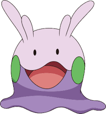

GoomyThe weakest Dragon-type Pokémon, it lives in damp, shady places, so its body doesn’t dry out.
Goomy is a Dragon type Pokémon introduced in Generation 6. It is known as the Soft Tissue Pokémon. Goomy is covered in a slimy membrane that makes any punches or kicks slide off it harmlessly.